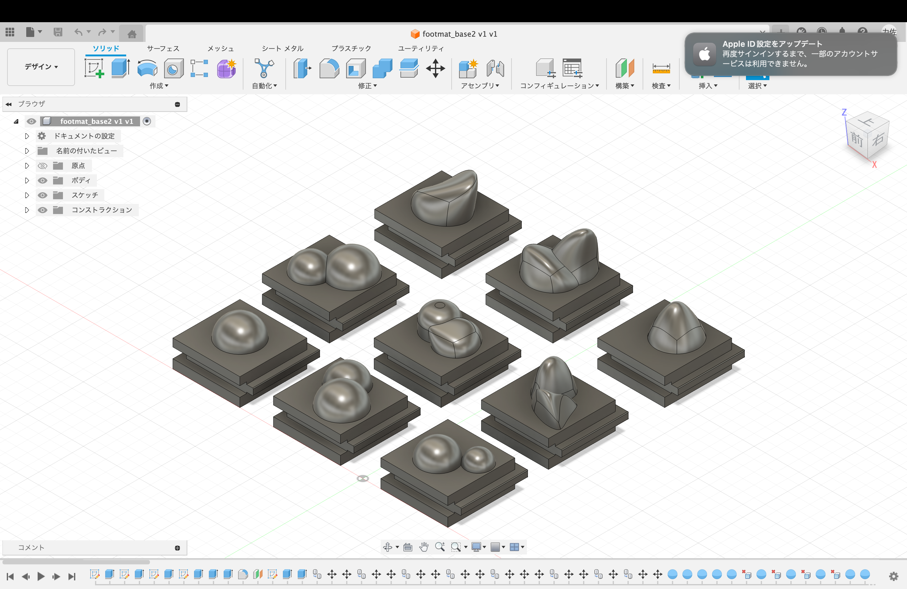
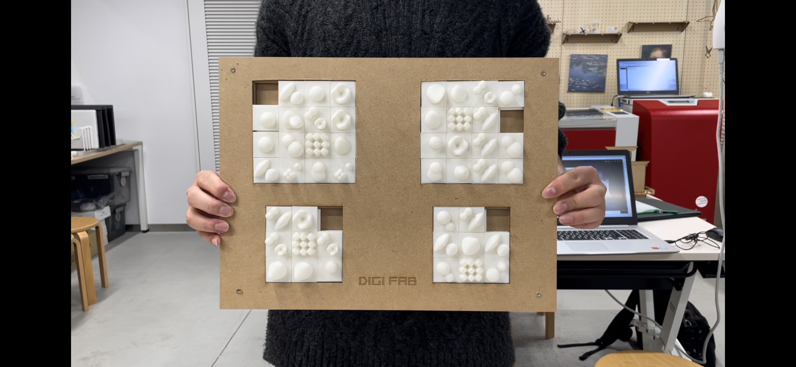
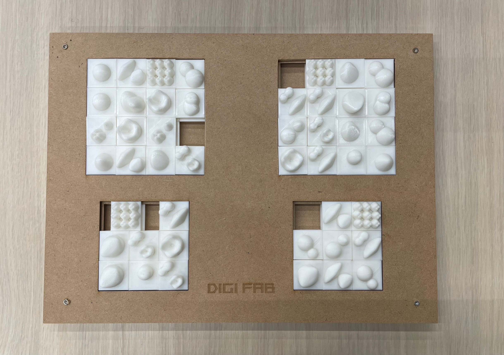
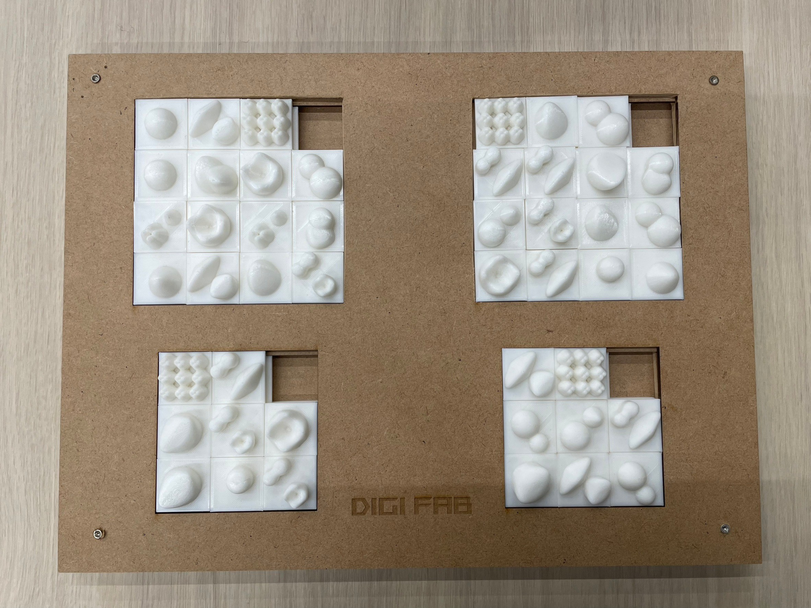

＜構想とfusionスクショ＞
通常の足つぼマッサージではつまらないと思い、組み換え自在な足つぼマッサージを考えた。
イラレとfusionのデータが消えてしまったので、一部を載せる。
部品のスケッチは下記の通り。

イラレで部品を埋め込む枠を作り、部品が入りきらなかった場合はひたすらやすりで削った。
＜完成品＞



振り返り・反省
二人での共同作業にしたことでfusion知識をやすことができて良かった。
一人でクオリティの高い作品を作れるに至らなかったので、長期休みに個人的にfusionやイラレに触れてみても良いと思った。
＜動画＞
Youtube動画